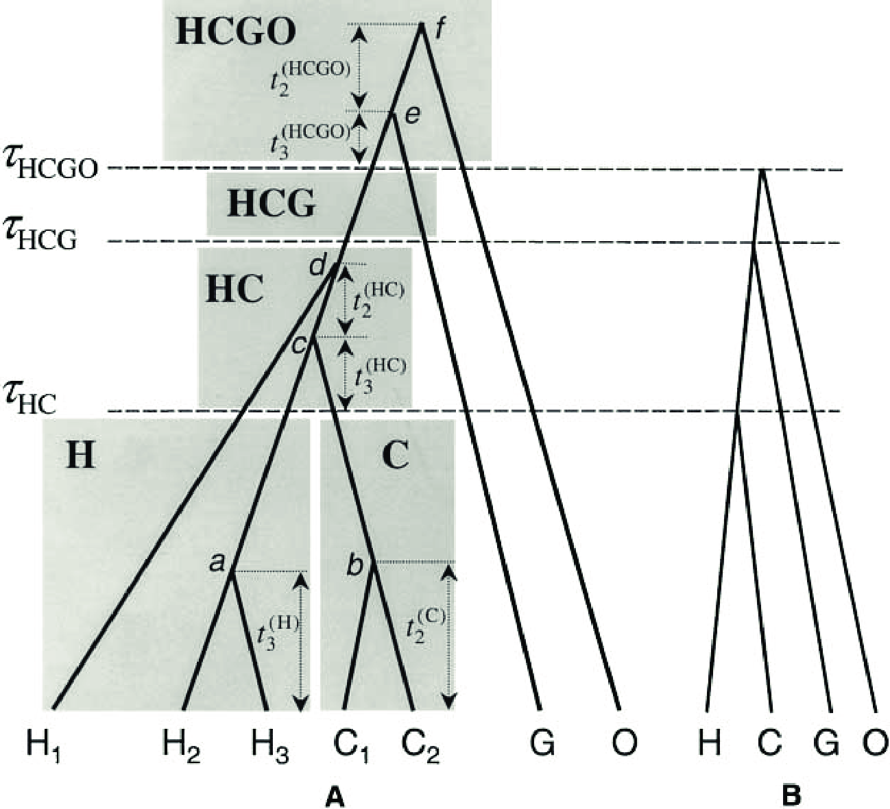

Ever since @Zuckerkandl1965a, researchers have acknowledged that phylogenies reconstructed from homologous gene sequences could differ from species phylogenies. As molecular sequences accumulated, the link between gene trees and species trees started to be modeled. The first models were based on parsimony, and aimed for instance at reconciling a gene tree with a species tree by minimizing the number of events of gene duplication and gene loss. In the past dozen years, probabilistic models have been proposed to reconstruct gene trees and species trees in a rigorous statistical framework. Models and algorithms have quickly grown in complexity, to model biological processes with increasing realism, to accommodate several processes at the same time, or to handle genome-scale data sets. In this overview we will not detail these models, and we invite the interested reader to take a look at recent reviews (e.g.,(missing reference)).
There are several reasons why a gene tree may differ from a species tree. Of course, a gene tree may differ from the species tree just because a mistake was made during the analysis of the gene sequences, at any point in a pipeline going from the sequencing itself to the gene tree reconstruction. Such a mistake would produce an incorrect gene tree. Here we do not mean this kind of discord, but rather discord that comes from a real biological process that generates true gene histories that differ from true species histories. These processes include gene duplication, gene loss, gene transfer (used loosely here to also include reticulation, hybridization between species), and incomplete lineage sorting (Fig. [fig1]). In this tutorial we focus on Incomplete lineage sorting, which will be discussed in more details in the following subsection.
Fig. [fig1] suggests that for all processes the gene tree can be seen
as the product of a branching process operating inside the species tree.
Indeed, all processes are modeled as some type of birth-death process
running along the species tree. For duplication/loss models, birth
correspond to gene duplication events, and death to gene loss events.
Transfers can be added to the model by introducing another type of
birth, with a child lineage appearing in another branch of the species
tree. Incomplete lineage sorting is also modeled with a birth-death type
of model, the coalescent. All these models can be made heterogeneous,
for instance by allowing different sets of parameters for different
branches of the species tree. This is useful to model differences in
rates of duplication, loss or transfer among species, or to model
different effective population sizes in a species tree. In
RevBayes so far only models of incomplete lineage sorting
have been implemented (models of duplication and loss and transfer will
soon be added). Thanks to RevBayes modular design, there
is quite a lot of flexibility in specifying the model, for instance by
associating different parameters to different branches of the species
tree, or by combining the gene tree-species tree model to other types of
models, for instance models of trait evolution, or models of relaxed
molecular clock.
There have been several approaches to species tree reconstruction: concatenation and supertree approaches, which have been used for quite some time now, and more recently methods that rely on gene tree-species tree models.
Concatenation simply consists in taking all gene alignments, concatenating them into one super alignment, and then analyzing it as if it were a single gene sequence. More sophisticated approaches allow different partitions for different genes, but the main assumption at the heart of this approach is that all sites of all genes have evolved according to the same species tree. This assumption is often not correct because all the processes of discord presented above conspire to make gene trees different from the species tree. In practice, this matters: simulation studies have found that in the presence of incomplete lineage sorting, in some particular areas of the parameter space, concatenation will often return an incorrect species tree (Leaché and Rannala 2011). Concatenation may also be a questionable approach in prokaryotic phylogenetics, where the quest for a tree of life has been difficult, to the point that some doubted that one could find a meaningful species tree representing vertical descent. Nonetheless, the concatenation approach may be fairly robust to lateral gene transfers, as it returns good species trees (arguably better than small subunit or large subunit rRNA trees) in a range of prokaryotic groups (missing reference).
Supertree approaches differ from concatenation notably by discarding sequence information once individual gene trees have been built. Contrary to concatenation approaches that combine individual gene alignments, supertree approaches combine individual gene trees to obtain a species tree. Most supertree methods are not based on an explicit model of the processes causing discordance between gene trees and species tree (although there are exceptions, notably modelling incomplete lineage sorting, see below). Instead, they aim at finding a tree that would best describe the distribution of gene trees, according to some fairly arbitrary criterion. In practice, these methods have been found to provide reasonable results in many cases, but in simulations they are usually less accurate than concatenation.
Methods that rely on gene tree-species tree models appear very promising as they explicitly model the processes of discord. The advantage of these models is that we account for processes that we know have taken a part in generating the data, thus possibly improving the accuracy and robustness of our inferences. Further, these models can be combined with e.g.,models of sequence evolution, models of co-evolution between gene trees, or models of trait evolution. However, these models are computationally challenging to use, because they require estimating jointly gene trees, species trees, and other parameters that entertain strong correlations. As a consequence, in many gene tree-species tree models, devising a well-mixing MCMC strategy can be problematic.
Incomplete lineage sorting is a population-level process. In a species, at a given time, there are several alleles for a given locus in the genome. These alleles have their own history, they diverged from each other at various times in the past. This history can differ from the species history, because several alleles can persist through a speciation event, and because, even without selective effects, the sorting of alleles during a speciation event is random and can result in a tree that differs from the species tree (Fig. [fig1]d). In all cases, incongruence between the gene tree and the species tree occurs when alleles persist over the course of several speciation events. When reconstructing a gene tree, one therefore gets the history of the alleles that have been sampled (at best), not the history of the species.
In 2003, Rannala and Yang proposed a powerful way to model the sorting of alleles along a phylogeny of several species (Rannala and Yang 2003), the multispecies coalescent (Fig. [fig2]). This model is at the origin of most model-based approaches to reconstruct gene and species trees (missing reference). The multispecies coalescent models the evolution of a population of alleles along a species tree. Along the species tree, it allows different branch lengths, in units of time, and also allows different effective population sizes. Computing the probability of a gene tree given a species tree and other parameters is quite easy. Basically it works by cutting the gene tree into independent species-specific subtrees, computing probabilities for each of those subtrees, and combining them all at the end to get the probability of the gene tree according to the multispecies coalescent, given the current parameter values. Cutting the gene tree into species-specific subtrees is quite easy, because we can use the dates of speciation events to identify parts of the gene trees that are before and after speciation events. The resulting subtrees are represented with the grey boxes in Fig. [fig2]. In this figure, each subtree corresponds to one particular population, either extant or ancestral. Inside each subtree, given its length, the effective population size, and dates of coalescence (divergences of alleles), the coalescent model provides simple formulas for computing the probability of the gene subtree given other parameters. Because we consider that these subtree probabilities are all independent of one another, they are then multiplied to get the gene tree probability given current parameter values.
Two parameters associated to branches of the species tree have a direct impact on the expected amount of gene tree-species tree incongruence:
Time between speciations. The more a branch length increases, the more the pool of alleles is expected to change. Alleles are therefore less likely to persist for several speciation events if the branches between these speciation events are long.
Effective population size between speciations. In populations with small effective population sizes, chance events can cause large shifts in allele frequencies, and possibly disappearance of alleles. In large populations, because an allele is likely carried by a large number of individuals, its disappearance is less likely, the population of alleles is more stable. Alleles are therefore less likely to persist for several speciation events if the branches between these speciation events are characterized by small effective population sizes.
Overall, larger amounts of gene tree-species tree incongruence are expected in phylogenies characterized by short branches with large population sizes. A corollary of that is that larger amounts of gene tree-gene tree incongruence are expected as well. To measure the susceptibility of species phylogenies to generate incomplete lineage sorting, the concept of coalescent time units has been introduced. Coalescent time units are obtained when branch length $\lambda$, in number of generations, is divided by effective population size $N_e$. As a consequence, in a species tree whose branches are expressed in coalescent time units, a branch length of $1~coalescent~time~unit $ means a branch length of $N_e~generations$. Once branch lengths on the species tree are measured in coalescent time units, it becomes easy to spot species trees that generate a lot of incongruence: those are short trees.
 The multispecies coalescent. A) A gene tree, including 3 human alleles, 2 Chimp alleles, one Gorilla allele, and one Orang-outan allele. $\tau$ parameters are speciation times, $t$ parameters are divergence time in the gene tree, the grey squares represent the ancestral populations, with their respeciive sizes. B) The corresponding species tree. In this model, the speciation times define minimal boundaries for allele divergence times. [Replicated from Fig. 1 in @Rannala2003.]
The exercises assume you have a working installation of RevBayes. In this introductory tutorial, we will apply the multispecies coalescent model to 10 gene alignments from 23 primate species. We will specify the multispecies coalescent, with different effective population sizes for each branch of the species tree. We will assume that:
The species tree is drawn from a constant birth-death process.
Along the branches of the species tree, a multispecies coalescent process generates gene trees. Different effective population sizes are assigned to each branch of the species tree.
Along each gene tree, gene sequences are evolved according to an HKY modeland a strict global clock. To save computing time, we do not use gamma distributed rate variation among sites.
Here, we run an MCMC on this model, using data from 10 genes in 23 mammalian species.
Scripts are all placed in $tutorials/RB_MultispeciesCoalescent_Tutorial/scripts/$.
Open RevBayes
Let’s load all 10 gene alignments.
### Read in sequence data for all genes
locus_names = ["COIII", "FGA", "GHRmeredith", "lrpprc_169", "npas3", "sim1", "tex2", "ttr", "zfy", "zic3"]
num_loci = locus_names.size()
# read in each data matrix separately
for ( i in 1:num_loci ) {
data[i] <- readDiscreteCharacterData("data/" + locus_names[i] + ".fasta")
}
# alternatively we could have read in from data/merged.nex too (although that contains the empty sequences ...)
# Get some useful variables from a species tree.
# We need these variables later on, but we will not use the species tree as starting value.
primate_tree = readTrees("data/primates.tree")[1]
n_species <- primate_tree.ntips()
taxa <- primate_tree.taxa()
n_branches <- 2 * n_species - 1 # number of branches in a rooted tree
# set my move index
mi = 0
We specify a constant-rate birth-death process as our prior on the species tree. The birth-death process has a speciation and extinction rate as its parameters. We use here a transformation and specify priors on the speciation rate and relative extinction rate. Additionally, we calibrate the tree by assuming that the crown age of primates is around 75 MYA. Thus, we specify a normal distribution with mean 75 and standard deviation 2.5 as the prior on the root age. Since the root age can only be a positive real number we truncate the normal distribution at 0.
# Specify a prior on the diversification and turnover rate
speciation ~ dnGamma(2,2)
relativeExtinction ~ dnBeta(1,1)
# now transform the diversification and turnover rates into speciation and extinction rates
extinction := speciation * relativeExtinction
# specify a prior on the root age (our informed guess is about 75-80 mya)
root ~ dnNormal(mean=75,sd=2.5,min=0.0, max=Inf)
sampling_fraction <- 23 / 450 # 23 out of the ~ 450 primate species
# create some moves that change the stochastic variables
# all moves are sliding and scaling proposals
moves[++mi] = mvSlideBactrian(speciation,tune=true,weight=2)
moves[++mi] = mvSlideBactrian(relativeExtinction,tune=true,weight=2)
moves[++mi] = mvScaleBactrian(speciation,lambda=1,tune=true,weight=2)
moves[++mi] = mvScaleBactrian(relativeExtinction,lambda=1,tune=true,weight=2)
# construct a variable for the tree drawn from a birth death process
psi ~ dnBDP(lambda=speciation, mu=extinction, rootAge=root, rho=sampling_fraction, taxa=taxa )
Mixing in the multispecies coalescent model is particularly challenging. Although, in principle and assuming our MCMC is working as intended, after an infinite amount of time we would converge to a correct estimate of the posterior distribution over the species tree, gene trees and other parameters, it is advisable to start from reasonable starting values for the species tree and the gene trees. In our case, we have already reconstructed candidate gene trees using RevBayes. These gene trees have been produced using the scripts:\ $tutorials/RB_MultispeciesCoalescent_Tutorial/scripts/mcmc_GeneTree.Rev$ and\ $tutorials/RB_MultispeciesCoalescent_Tutorial/construct_all_GeneTrees.sh$). They have been placed in the folder $tutorials/RB_MultispeciesCoalescent_Tutorial/output_GeneTrees$, and Maximum A Posteriori (MAP) trees have been constructed. These MAP trees will provide good starting gene trees, and will also be used to generate a starting species tree using a function that computes a maximum tree (Edwards et al. 2007). The maximum tree “is the tree with the largest possible speciation times in the space of species trees restricted by available gene trees” (Liu et al. 2010). Conveniently, tip names in the gene trees correspond to the species names: we can thus use the maximum tree function on these trees without worrying about potential name inconsistencies.
# read in each gene tree separately
j=1
for ( i in 1:num_loci ) {
gene_trees[i] <- readTrees("output_GeneTrees/" + locus_names[i] + "_MAP.tree")[1]
print("Gene tree "+i+ " has "+ gene_trees[i].ntips() + " tips.")
}
# We set the species tree to a good starting value.
# This good starting value is obtained from the Maximum Tree method (Liu, 2006).
# The same method is used in BEST to obtain a good starting species tree.
recTree <- maximumTree(gene_trees)
psi.setValue(recTree)
root.setValue(recTree.rootAge())
write("\t\tProposed starting species tree: ")
write( psi)
write("\t\tWith root age: " + root)
Now that we have a species tree, we can specify the prior on the gene trees by using a multispecies coalescent process. First, we need to load in a map of the individual names to the species names. This map ensures we can associate the individuals to the species they belong to. Have a look in one of these files, for example primates_COIII_species_map.txt. We will assume that each branch of the species tree, which represents a population, has its own population size. Thus, our prior is that each population size per branch is identically distributed from an exponential distribution with rate 0.1 (giving an expectation of 10 and thus a relatively flat prior distribution). Note that we use fixed population sizes for the terminal branches because we have only a single individual per species and thus have no information about its population size. One could use other models for the population sizes. For example one could assume that all branches have the same population size. Once the gene trees have been declared, we set their value to the MAP trees that we have read previously.
# We assume independent effective population size parameters for each branch of the species tree.
for (i in 1:n_species) {
Ne[i] <- 10.0
}
for (i in (n_species+1):n_branches) {
Ne[i] ~ dnExponential(0.01)
moves[++mi] = mvScale(Ne[i],lambda=.1,tune=true,3.0)
moves[++mi] = mvSlide(Ne[i],tune=true,2.0)
}
# We could also assume a single effective population size for the entire species tree.
#Ne ~ dnGamma(shape=1.0,rate=1.0)
#moves[++mi] = mvScale(Ne,1,true,1.0)
for (i in 1:num_loci) {
# We need to read in files providing the link between gene names and species names
taxon_map = readTaxonData("data/species_maps/primates_" + locus_names[i] + "_species_map.txt")
# The gene tree from the multispecies coalescent process
# Note that if Ne had been a vector of effective population sizes,
# allowing 1 parameter per branch of the species tree, the same line would work.
geneTree[i] ~ dnMultiSpeciesCoalescent(speciesTree=psi, Ne=Ne, taxa=taxon_map)
# We set a good starting value
geneTree[i].setValue(gene_trees[i])
}
Although we have defined both the species tree and the gene trees, we have not set up the moves that we use to sample them. We will use simple tree moves, that deal with a single tree at a time, and joing species tree-gene tree moves. Those latter moves are important because they explicitly take into account the interdependency between the species tree and the gene trees. These moves are first declared with the species tree as main argument. Then, each gene tree is added to the moves.
## General tree moves used on the species tree
moves[++mi] = mvNarrow(psi, weight=5.0)
moves[++mi] = mvNNI(psi, weight=1.0)
moves[++mi] = mvFNPR(psi, weight=3.0)
moves[++mi] = mvGPR(psi, weight=3.0)
moves[++mi] = mvSubtreeScale(psi, weight=3.0)
moves[++mi] = mvNodeTimeSlideUniform(psi, weight=5.0)
## Joint species tree/gene tree moves
move_species_narrow_exchange = mvSpeciesNarrow( speciesTree=psi, weight=20 )
move_species_subtree_scale_beta = mvSpeciesSubtreeScaleBeta(psi, weight=5)
move_species_subtree_scale = mvSpeciesSubtreeScale(psi, weight=5)
## Moves that alter gene trees
for (i in 1:num_loci) {
# moves on each gene tree
moves[++mi] = mvNNI(geneTree[i], 5.0)
moves[++mi] = mvNarrow(geneTree[i], 5.0)
moves[++mi] = mvFNPR(geneTree[i], 3.0)
moves[++mi] = mvGPR(geneTree[i], 2.0)
moves[++mi] = mvSubtreeScale(geneTree[i], 5.0)
moves[++mi] = mvTreeScale(geneTree[i], 1.0, true, 3.0)
moves[++mi] = mvNodeTimeSlideUniform(geneTree[i], 20.0)
# Associating the joint species tree/gene tree moves to each gene tree
move_species_narrow_exchange.addGeneTreeVariable( geneTree[i] )
move_species_subtree_scale_beta.addGeneTreeVariable( geneTree[i] )
move_species_subtree_scale.addGeneTreeVariable( geneTree[i] )
}
## We must not forget to include the joint moves into the vector of moves!
moves[++mi] = move_species_narrow_exchange
moves[++mi] = move_species_subtree_scale_beta
moves[++mi] = move_species_subtree_scale
Now we have gene trees, complete with branch lengths, and the moves operating on them. The next element we need is a clock rate which transforms/scales the branch times into branch lengths that represent the expected number of substitutions. Here we will assume for simplicity that every gene evolves under a global strict clock but has its own independent clock rate. We can later look into the estimate to see how much the clock rate estimates actually differ across genes. One could also choose to use a relaxed clock model instead of a strict clock.
for ( i in 1:num_loci ) {
clock_rate[i] ~ dnExponential(1.0)
moves[++mi] = mvScale(clock_rate[i], weight=2.0)
moves[++mi] = mvSlide(clock_rate[i], weight=3.0)
}
Next we need our model for the substitution process. Hence, we just need to define the substitution matrix. We use a single HKY matrix that will apply to all sites per gene. Additionally, we assume that sites all evolve according to the same rate, to save computing time.
for ( i in 1:num_loci ) {
#### specify the HKY substitution model applied uniformly to all sites ###
kappa[i] ~ dnLognormal(0,1)
moves[++mi] = mvScale(kappa[i],weight=1.0)
moves[++mi] = mvSlide(kappa[i], weight=1.0)
pi_prior[i] <- v(1,1,1,1)
pi[i] ~ dnDirichlet(pi_prior[i])
moves[++mi] = mvSimplexElementScale(pi[i],weight=2.0)
#### create a deterministic variable for the rate matrix ####
Q[i] := fnHKY(kappa[i],pi[i])
}
Finally, we can create our distribution for character evolution. We will use the common ‘PhyloCTMC‘ distribution, which is a continuous time Markov process along a phylogenetic tree. We create a ‘seq‘ variable and attach/clamp each gene to one of the ‘seq‘ variables.
for ( i in 1:num_loci ) {
# the sequence evolution model
seq[i] ~ dnPhyloCTMC(tree=geneTree[i], Q=Q[i], branchRates=clock_rate[i], type="DNA")
# attach the data
seq[i].clamp(data[i])
}
Now we have defined all the bricks of the model, and create our model object from it.
# We get a handle on our model.
# We can use any node of our model as a handle, here we choose to use the topology.
mymodel = model(psi)
Finally, we need to perform inference under the model, using the data. For clarity, we put the results in an output folder, and the gene trees will be further included within a folder of their own.
output_folder = "output_MSC/"
# Monitors to check the progression of the program
monitors[1] = mnScreen(printgen=100, psi)
monitors[2] = mnModel(filename=output_folder+"posterior_MSC_primates.log",printgen=10, separator = TAB)
monitors[3] = mnFile(filename=output_folder+"posterior_MSC_primates.trees",printgen=10, separator = TAB, psi)
for ( i in 1:num_loci ) {
# We add a monitor for each gene tree
monitors[i+3] = mnFile(filename=output_folder+"geneTrees/posterior_" + locus_names[i] + ".trees",printgen=10, separator = TAB, geneTree[i])
}
# Here we use a plain MCMC. You could also set nruns=2 for an analysis with 2 replicates.
# or use mcmcmc with heated chains.
mymcmc = mcmc(mymodel, monitors, moves, nruns=1)
# Ideally one would run more MCMC samples.
# In the interest of time it may be worth running the analysis under the prior.
mymcmc.burnin(generations=1000,tuningInterval=50)#, underPrior=true)
mymcmc.run(generations=3000)#, underPrior=true)
mymcmc.operatorSummary()
Now we can perform some post-run analyses, for instance to obtain and save the MAP species tree.
# Now, we will analyze the tree output.
# Let us start by reading in the tree trace
treetrace = readTreeTrace(output_folder+"posterior_MSC_primates.trees", treetype="clock")
# and get the summary of the tree trace
treetrace.summarize()
mapTree(treetrace,output_folder+"posterior_MSC_primates_MAP.tree")
Do you find that the full multispecies coalescent mixes well?\ Is the mixing markedly different when the model is run under the prior?\ What is the impact of species tree moves on the mixing?\ Given the acceptance ratios of some of the moves, would you be tempted to change the frequency at which they are tried? If so how?\ What other improvements could be made to the script?
Version dated: